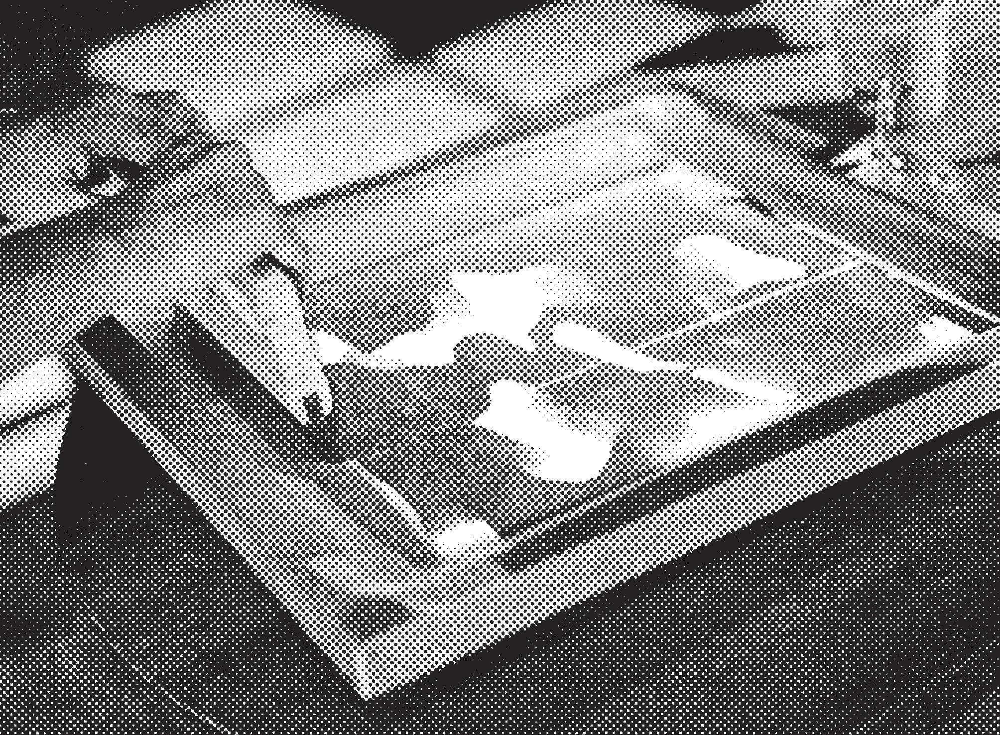
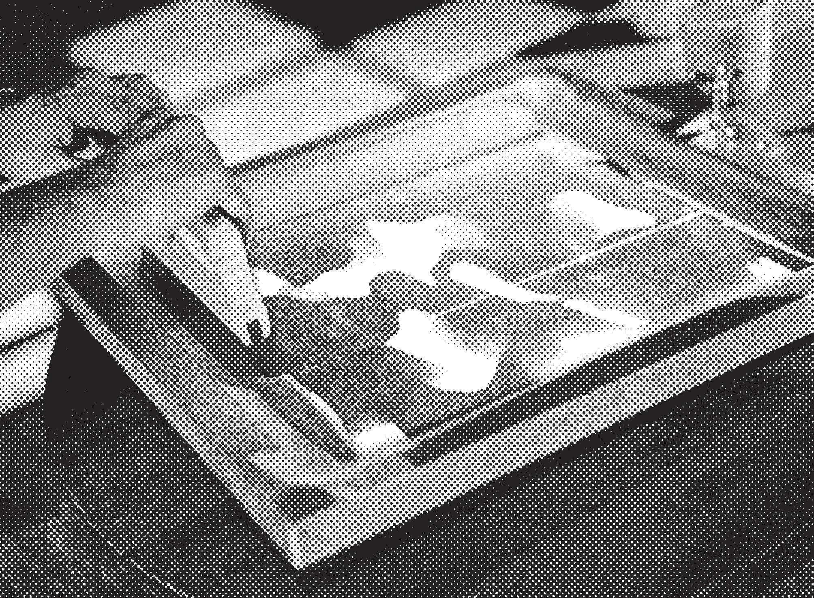

Siebdruck & Risografie
Ich begleite Workshops in der Druckwerstatt vom Nyomda Risokollektiv in grafischen Drucktechniken wie Siebdruck und Risografie.
Bei den Workshops geht es darum, traditionelle Techniken abseits des Bildschirms zu erleben und im Austausch mit anderen das eigene gestalterische Denken zu erweitern.
Ich begleite Workshops in der Druckwerstatt vom Nyomda Risokollektiv in grafischen Drucktechniken wie Siebdruck und Risografie.
Bei den Workshops geht es darum, traditionelle Techniken abseits des Bildschirms zu erleben und im Austausch mit anderen das eigene gestalterische Denken zu erweitern.
print making on paper and textil


Anstehend
Wenn du Interesse an zukünftigen Workshoptermine hast, sende eine E-Mail mit dem Betreff “Workshop” an design@bartokstudio.de oder riso@nyomda.de
Wenn du Interesse an zukünftigen Workshoptermine hast, sende eine E-Mail mit dem Betreff “Workshop” an design@bartokstudio.de oder riso@nyomda.de
Vergangen
24.11.24. RISO Mini-Zine Workshop (nyomda)
27.02.24. RISO Workshop (nyomda/K49)
30.10.22. Siebdruckworkshop (LOCH)
09.09.22. Poster Time (LOCH)
24.11.24. RISO Mini-Zine Workshop (nyomda)
27.02.24. RISO Workshop (nyomda/K49)
30.10.22. Siebdruckworkshop (LOCH)
09.09.22. Poster Time (LOCH)